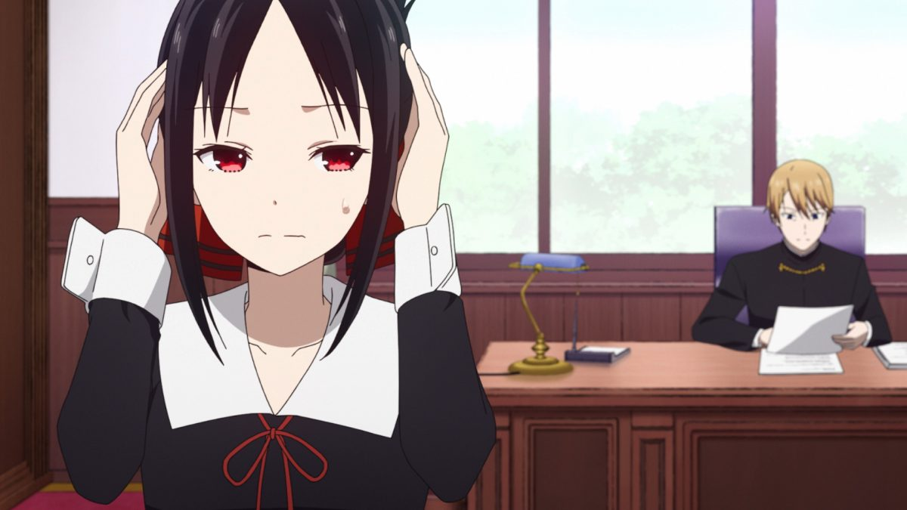
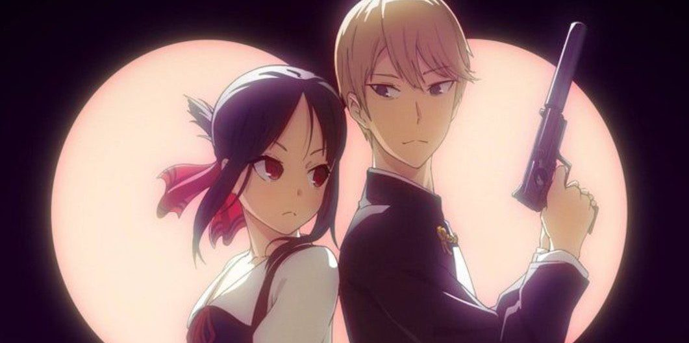
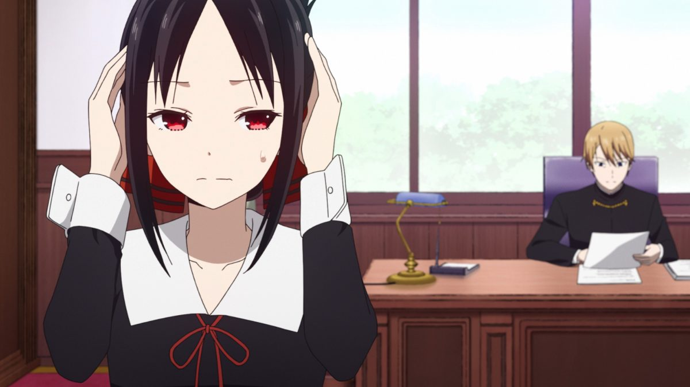
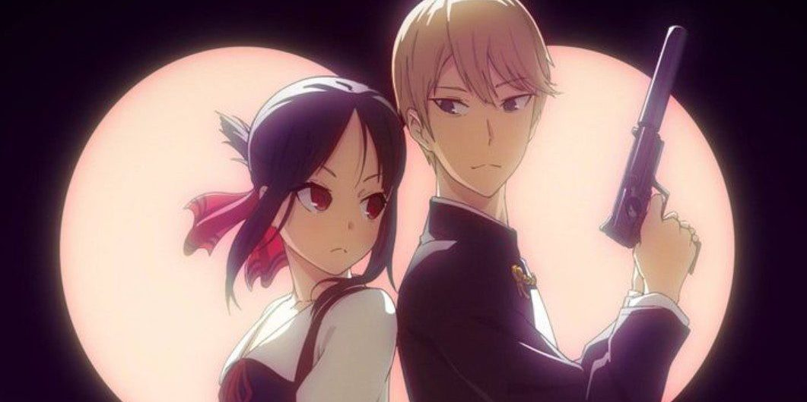

Kaguya Sama Synopsis
At the renowned Shuchiin Academy, Miyuki Shirogane and Kaguya Shinomiya are the student body's top representatives. Ranked the top student in the nation and respected by peers and mentors alike, Miyuki serves as the student council president. Alongside him, the vice president Kaguya—eldest daughter of the wealthy Shinomiya family—excels in every field imaginable. They are the envy of the entire student body, regarded as the perfect couple. However, despite both having already developed feelings for the other, neither are willing to admit them. The first to confess loses, will be looked down upon, and will be considered the lesser. With their honor and pride at stake, Miyuki and Kaguya are both equally determined to be the one to emerge victorious on the battlefield of love!
Main Characters
1: Shinomiya, Kaguya :
Kaguya Shinomiya (四宮 かぐや(しのみや かぐや), Shinomiya Kaguya) is the main female protagonist of Kaguya-sama: Love Is War. She is a student at Shuchi'in senior high school and the vice president of the student council in the academy. She is voiced by Aoi Koga in the Japanese version, and by Alexis Tipton in the English version.
Shinomiya, Kaguya ( Personality ):
Due to being part of a wealthy and important family, Kaguya is sometimes seen arrogant and is very confident about her intelligence and incredible skills. However this only her image that portates outside. Deep down she always is with an inmmense pressure for accomplishing her family's expectations, feels desesperate to do things her friends daily do. She doesn't consider herself a good person and as such, has a longing for true kindness that borders on obsession which she found in Miyuki. She cares about the members of the student council and considers them as treasured friends. Kaguya has a bad habit of immediately turning to money to solve her problems.
1: The president, Miyuki:
Miyuki Shirogane (白銀 御行しろがね みゆき, Shirogane Miyuki) is one of the main protagonists of Kaguya-sama Love is War. Miyuki is a second year student at Shuchi'in Academy and is the president of the student council. He is also the love interest of Kaguya Shinomiya.
Miyuki ( Personality ):
Miyuki is a diligent student who, despite his underprivileged background, climbed his way to the top of his class through hard work and determination. Miyuki holds himself in high regard, consistently working to maintain his perfect image. He is a textbook workaholic, enjoying his part-time job and often putting his own health at risk for the sake of his work, he always attempts to recruit new workers and make them join his part-time job. Due to his poor background, Miyuki doesn't mention finance much and goes to great lengths to not be wasteful, and generally dislikes expensive gifts.
1: Fujiwara, Chika :
Chika Fujiwara is a fictional character in the manga series Kaguya-sama: Love Is War, created by Aka Akasaka.
Fujiwara ( Personality ):
Chika is a bubbly eccentric girl who almost always has a smile on her face. Always looking to have fun with her fellow student council members, she is often the one to come up with strange activities and ideas that entertain herself and the others. She is mostly oblivious to the atmosphere of the room, resulting in her being an unpredictable element that ruins many of Kaguya Shinomiya's and Miyuki Shirogane's schemes to make the other confess, and Ai Hayasaka as Chika is a threat to her tasks.
1: Ishigami, Yuu :
Yu Ishigami is the tritagonist of the 2015 romantic comedy manga series. Kaguya-sama: Love Is War. and its 2019 anime television series adaptation of the same name.
Ishigami, Yuu ( Personality ):
Ishigami is a reserved and somewhat gloomy student who would rarely show up to the student council meetings, preferring to do most of his work at home. He normally spends most of his time playing video games by himself, as he is generally be disliked by the other students due to an incident that occurred in his past.
Theme ( Psychological, Romantic Subtext, School ) :
- Duration : 25 min. per ep.
- Source : Manga
- Rating : 8.401 (scored by 894,215 users)
- Popularity : #62
- Aired : Jan 12, 2019 to Mar 30, 2019
Cool Gifs & Images ( Kaguya Sama ):
 


